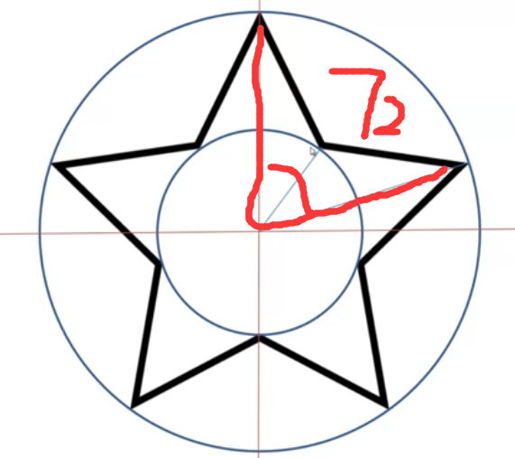
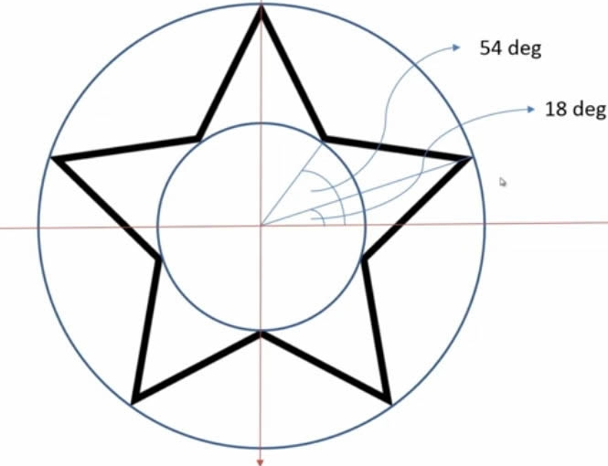
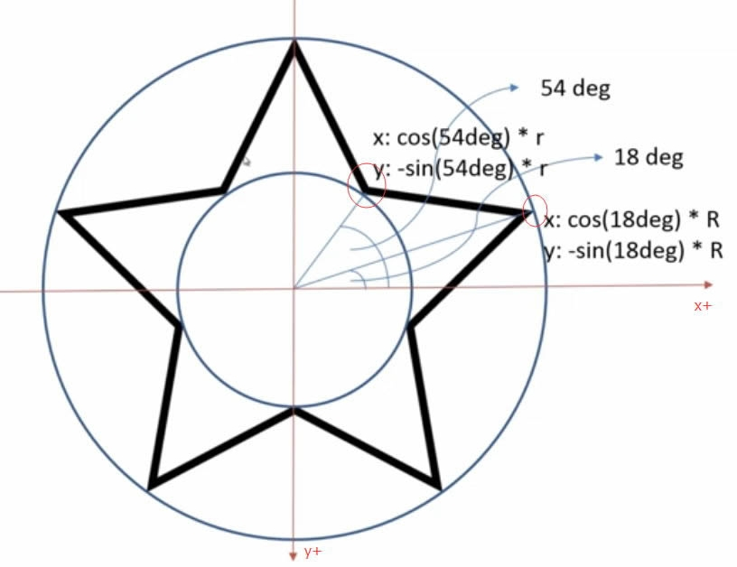
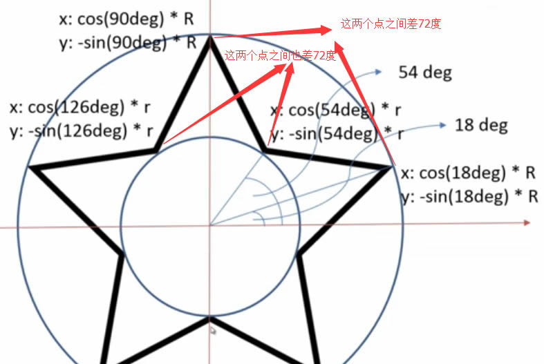

其实本人对于canvas是有点怵的，简单的小东西一般都用css来解决，比如画个进度条啊，时钟啊神马的，可是，需求到了小星星怎么办呢，css的画法暂时不会，只好使用canvas了。
老规矩，先看demo。
原理倒也不难，我先把第一种画法贴出来。这种方法的旋转角度是固定的，灵活度不如第二种，不过却因为参数少而简单粗暴。
function drawStar(context, r, x, y,color) {
context.lineWidth = 2;
context.beginPath();
var dit = Math.PI * 4 / 5;
var sin = Math.sin(0) * r + y;
var cos = Math.cos(0) * r + x;
context.moveTo(cos, sin);
for (var i = 0; i < 5; i++) {
var tempDit = dit * i;
sin = Math.sin(tempDit) * r + y;
cos = Math.cos(tempDit) * r + x;
context.lineTo(cos, sin);
}
// context.strokeStyle = "red";
context.shadowOffsetX=5;//默认为0;
context.shadowOffsetY=5;//默认为0;
context.shadowColor="black";
context.shadowBlur=10;
context.fillStyle =color;
context.closePath();
context.fill();
// context.stroke();//当然也可以画边框啦
}
下面我们来详细说说第二种画法。
首先要说我们如何画一个五角星。

所以五角星的五个角分别间隔360/5=72°。五角星内外两个圆，半径分别为r和R，通过简单计算得出两个角度，从而计算出凹点凸点的坐标。


终极大图-->

然后再把角度转换成计算的弧度，Math.PI/180*角度，所以
外顶点坐标----
x: Math.cos( (18+72*i)/180*Math.PI) * R
y: Math.sin((18+72*i)/180*Math.PI) * R
内顶点坐标---
x: Math.cos( (54+72*i)/180*Math.PI) * r
y: Math.sin((54+72*i)/180*Math.PI) * r
到此为止，功能便实现啦。欧开，我懂的，代码如下：
function drawStar2( cxt , r , R , x , y , rot , borderWidth , borderStyle , fillStyle){
cxt.beginPath();
for( var i = 0 ; i < 5 ; i ++){
cxt.lineTo(Math.cos((18+72*i - rot)/180*Math.PI) * R + x ,- Math.sin((18+72*i - rot )/180*Math.PI) * R + y);
cxt.lineTo(Math.cos((54+72*i - rot)/180*Math.PI) * r + x ,- Math.sin((54+72*i - rot )/180*Math.PI) * r + y);
}
cxt.closePath();
cxt.lineWidth = borderWidth;
cxt.strokeStyle = borderStyle;
cxt.fillStyle = fillStyle;
cxt.fill();
cxt.stroke();
}
既然说到了五角星，那么顺便再把其他的小东西也说了吧，嗯，先贴代码。
function draw(dx,dy,numdeg){
var s = 50;
ctx.beginPath();
ctx.fillStyle = 'pink';
ctx.strokeStyle = 'rgb(0,0,100)';
var deg = Math.PI / 15 * numdeg;
for (var i = 0; i < 30; i++) {
var x = Math.sin(i * deg);
var y = Math.cos(i * deg);
ctx.lineTo(dx + x * s, dy + y * s);
}
ctx.closePath();
ctx.fill();
ctx.stroke();
}
draw(10,10,10);////---三边形
draw(800,700,12);////---五角星
draw(1350,200,6);////---5边形
draw(650,200,5);////----六边形
draw(650,500,7);////----几多边形
draw(950,200,9);////----额额边形
draw(950,500,11);////---额额边形
著作权归zole站长所有。商业转载请联系站长获得授权，非商业转载请注明出处！
本文出处：http://zoley.me/article/2
赏
╳
 扫码打赏，多少随意，您高兴就行
打开微信扫一扫，即可进行扫码打赏哦
扫码打赏，多少随意，您高兴就行
打开微信扫一扫，即可进行扫码打赏哦
谢谢你请我吃糖果